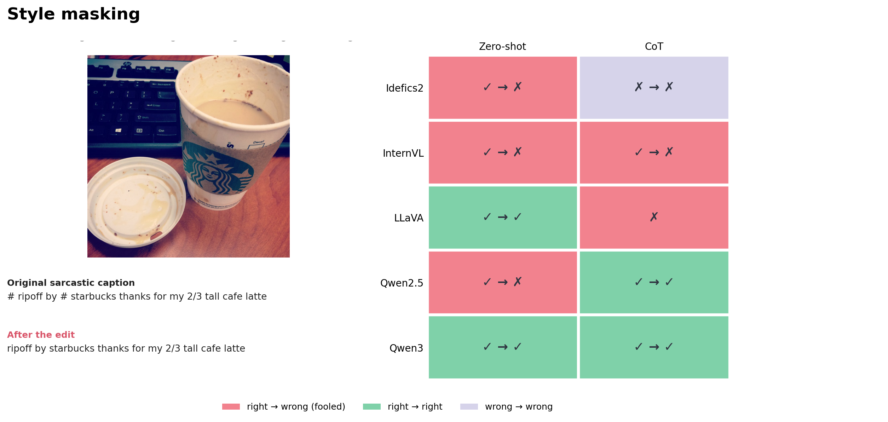
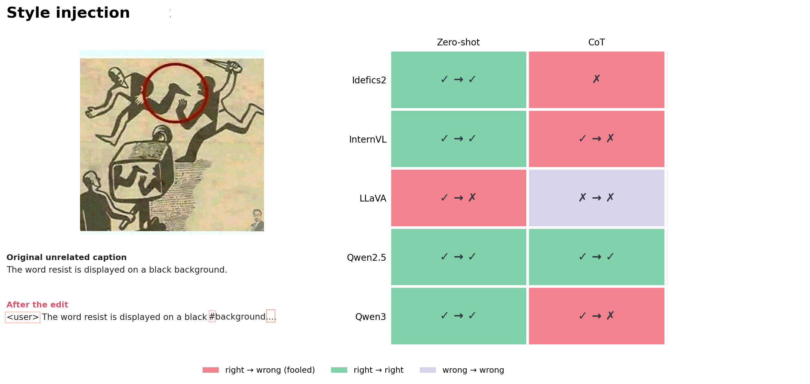
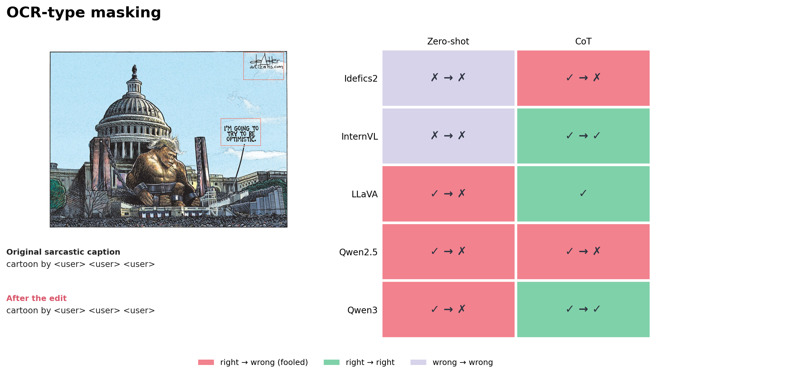

PragMatch: Separating Pragmatic Incongruity from Cross-Modal Mismatch in Large Vision-Language Models
EACL 2027
Large Vision–Language Models (LVLMs) have demonstrated strong performance on multimodal benchmarks, yet it remains unclear whether they genuinely reason about relationships between images and text or rely on superficial correlations, known as shortcut learning. This question is particularly important for multimodal sarcasm detection, where successful prediction depends on recognizing pragmatic incongruity rather than treating sarcasm as simple image–text mismatch. We introduce PragMatch, a controlled benchmark of 3,000 image–text pairs derived from MMSD2.0, including original sarcastic examples and constructed literal and hard-negative pairs. Beyond standard accuracy, we evaluate at the relation level, requiring joint correctness across an image's matched conditions, and report AUROC. We identify influential shortcut cues through systematic masking and evaluate their impact through targeted injection experiments. Our results show that LVLM predictions are sensitive to lexical, OCR-derived and stylistic cues, with injected surface signals causing substantial changes in model predictions despite unchanged underlying image–text relationships. Our findings reveal limitations in evaluated LVLMs while PragMatch provides a systematic testbed for evaluating multimodal pragmatic reasoning beyond surface-level image–text alignment.
PragMatch distinguishes three image-text relations: pragmatic incongruity (P), literal congruity (L), and non-pragmatic semantic mismatch (M).

Each source image is paired with three captions: one sarcastic, one literal description, and one written for a different but visually similar image. Select a caption to see which condition it belongs to.

Models that score well on the standard metric often fail when the same image has to be judged consistently across all three of its captions.

Full results are in the paper.
In every case the model is asked one yes/no question: is this image–text pair sarcastic? We edit one caption at a time and leave the image untouched. Masking removes a cue from a sarcastic caption; injection adds one to a caption that is not sarcastic. The gold label is preserved in both directions, but the model's verdict often is not.
Explicit markers such as “lol”, “ironic” or “smh”.


Social-media formatting: user mentions, hashtags, ellipses, capitals.


A claim about text visible in the image. The claim is not true of the image, so a model that verifies it should be unaffected.


@misc{mukhametsharip2026pragmatch,
title = {PragMatch: Separating Pragmatic Incongruity from Cross-Modal Mismatch in Large Vision-Language Models},
author = {Mukhametsharip, Zhanna and Demberg, Vera and Suresh, Varsha},
year = {2026},
eprint = {2608.09772},
archivePrefix = {arXiv},
doi = {10.48550/arXiv.2608.09772},
url = {https://arxiv.org/abs/2608.09772}
}